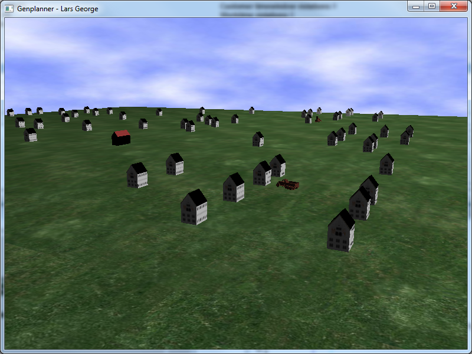

| Darstellungsformen :: Dreidimensionale Darstellung |
|
Jeder Tourenplan kann in der dreidimensionalen Ansicht betrachtet werden. Die Kunden werden als kleine Häuser mit einem schwarzen Dach auf der Karte dargestellt. Depots sind größere Häuser mit einem roten Dach. Die Fahrzeuge starten in ihrem jeweiligen Depot und fahren ihre Touren gemäß des selektierten Tourenplans. Es vergeht ein imaginärer Arbeitstag, an dessen Ende die Fahrzeuge zurück in das Depot fahren.  Dreidimensionale Darstellung eines Tourenplans Die Betrachtung der Welt kann durch den Benutzer gesteuert werden:
|